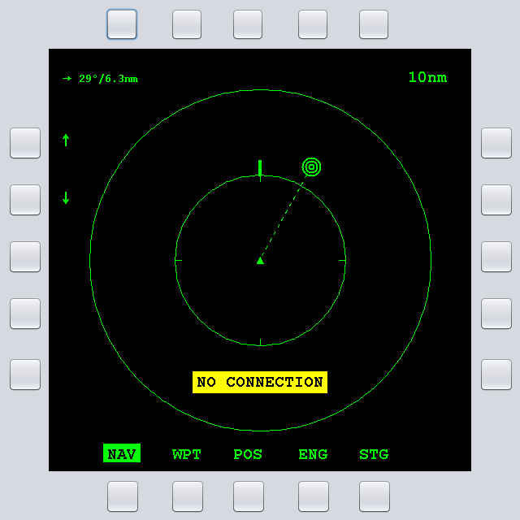
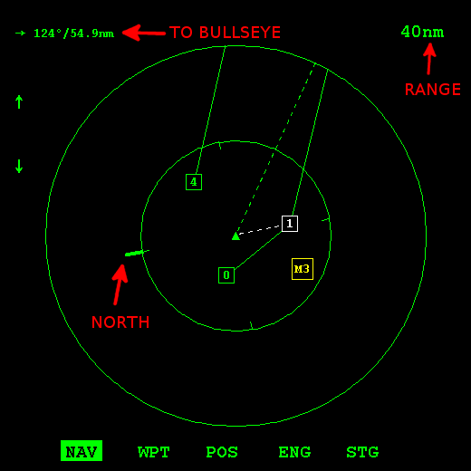
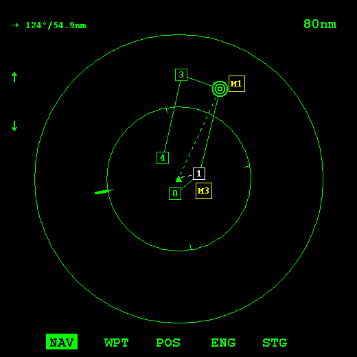
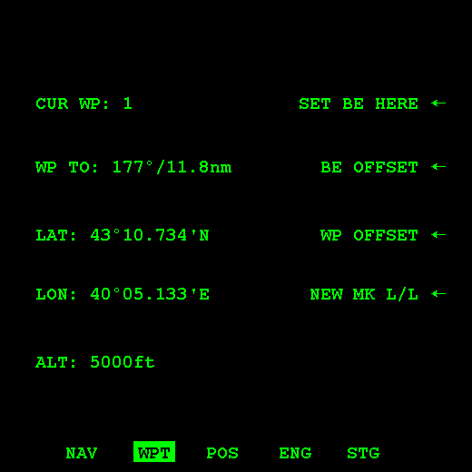
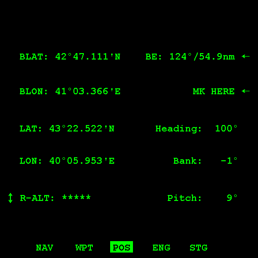
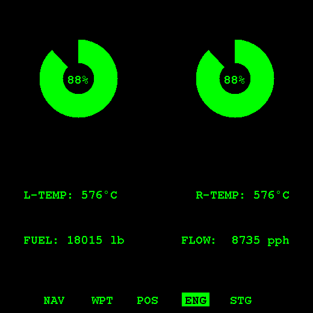
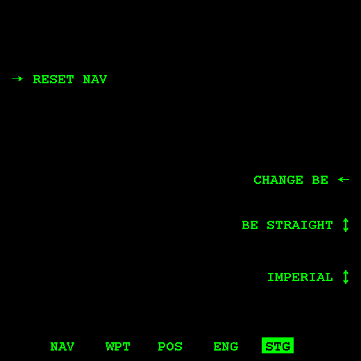
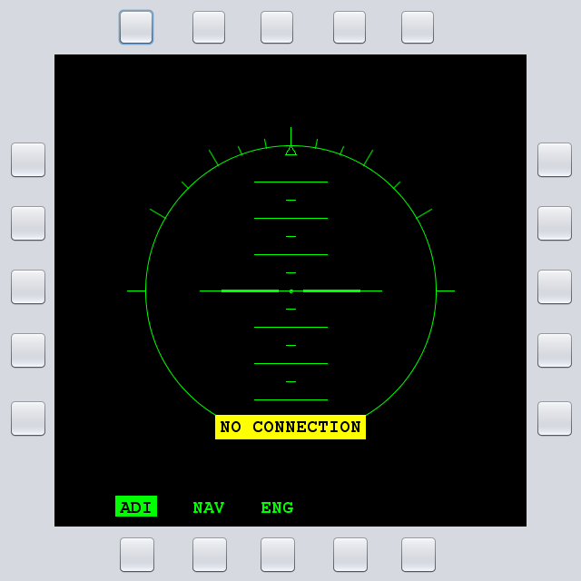

MFCD for FC3 - v1.1

Download
Sources
Description
To run the program a JRE 8 is required. Download it here.
This software integrated via export.lua in DCS World. It is dependant on which data is exportable for which aircraft, either case. To use it, just run it once before DCS World, and then launch the simulator afterwards. This is needed (only the first time) BEFORE DCS because the program will insert its lua script.
To quit the program, press F12. A contextual menu (right click) is available in the black screen.
The software can also be launched with custom parameters, the launch bat contains an example too:
- -noborders:
- -useMFD(X): where (X) is the index of the TrustmasterMFCD to use, ex. -useMFD1 or -useMFD2
- -xy1920,610: coordinates where to place it at startup
- -s512: size in pixel of the screen square (buttons excluded)
To change the paramters just look into the launch batch file (MFCD_FC3.bar)
Page: NAV


- The green triangle in the center is yor aircraft.
- The white dashed line points to your current object (waypoint or landing).
- The three green circles represent the bullseye. A dashed green line always points there.
- Waypoints are connected with a green line (you must cycle all the waypoints in order for them to appear).
- Yellow squares represent mark points that you can create in the next pages.
Page: WPT

note: OSBs are numbered clockwise from the upper left one.
note: coordinates are degree and minutes decimal for imperial, and degreed, minutes, seconds for metric.
- OSB 6: Sets the bullseye to the current waypoint.
- OSB 7: Creates an offset (mark point) FROM the bullseye.
- OSB 8: Creates an offset (mark point) from the current waypoint.
- OSB 9: Creates a mark point given the L/L coordinates.
- OSB 20: Displays current waypoint number.
- OSB 18: Displays bearing and range TO the current waypoint.
- OSB 18: Displays current waypoint Latitude.
- OSB 17: Displays current waypoint Longitude.
- OSB 16: Displays current waypoint Altitude.
Page: POS

note: OSBs are numbered clockwise from the upper left one.
note: coordinates are degree and minutes decimal for imperial, and degreed, minutes, seconds for metric.
- OSB 6: Bullseye bearing and range TO. Clicking here will change the bullssye position by coordinates.
- OSB 7: Make a mark point in the current position.
- OSB 8: Heading of the aircraft.
- OSB 9: Bank of the aircraft.
- OSB 10: Pitch of the aircraft.
- OSB 20: Bullseye Latitude.
- OSB 19: Bullseye Longitude.
- OSB 18: Current Latitude.
- OSB 17: Current Longitude.
- OSB 16: Current Altitude (rotary to switch radar/barometric).
Page: ENG

This page displays the engine throttle RPMs, temperature, total fuel and fuel consumption.
Page: STG

note: OSBs are numbered clockwise from the upper left one.
- OSB 20: resets the navigation info, waypoints and markpoints. Bullseye remains unchanged.
- OSB 18: Change the bullseye giving coordinates.
- OSB 19: Changes the way bullseye is displayed in the MAP, from/to bearing.
- OSB 10: Rotary switching for imperial or metric system.

From version 1.1: the ADI page.